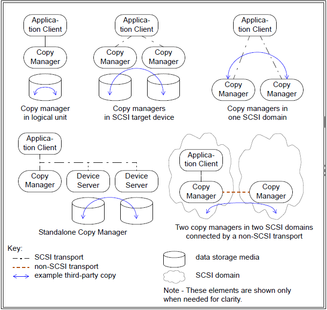
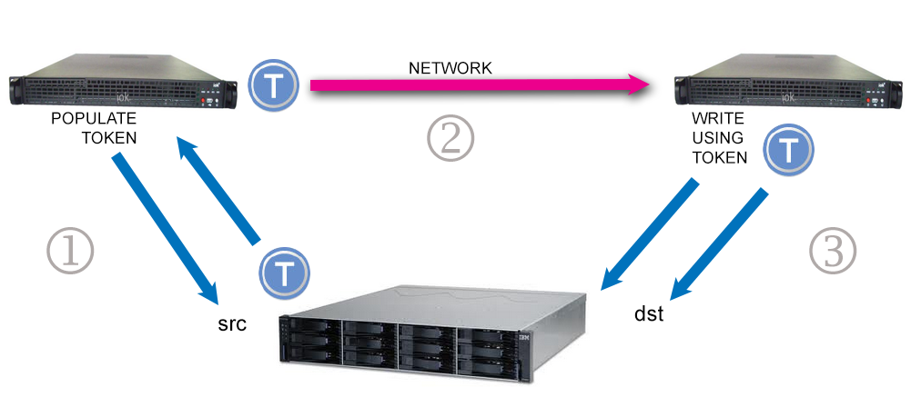

Examples of copy manager configurations

Network copy with ODX, a three step process
| ODX ddpt option |
ddpt default |
Brief description |
| ito=ITO | from TPC VPD page | Inactivity timeout specifies
the lifetime of a ROD Token (units: seconds) |
| list_id=LID | 257 or 258 |
The list identifier is used
to associate a POPULATE TOKEN with the following RRTI
command used to fetch the ROD Token. Another list identifier
associates a WRITE USING TOKEN with its following RRTI
command |
| oir=OIR | 0 |
Offset In Rod: used by WRITE
USING TOKEN command to start reading at a block offset
(units: OBS) in the ROD |
| rtf=RTF | RTF is a filename to read or
write ROD Token(s) to or from. |
|
| rtype=RTYPE | 0 |
ROD type field in POPULATE TOKEN command.
Default of 0 lets copy manager decide.Apart from numerical
values these abbreviations are accepted: pit-any,
pit-def, pit-pers, and zero . |
| seek=SL |
0 |
apart from the normal dd usage where the
argument is a (starting) LBA for the destination (output),
in ODX the argument can be a scatter list. This has the form
A1,N1[,A2,N2...] and can be given inline, in a file or via
stdin. The file syntax is seek=@<filename>
and the stdin syntax is either seek=- or seek=@-
. |
| skip=GL |
0 |
apart from the normal dd usage where the
argument is a (starting) LBA for the source (input), in ODX
the argument can be a gather list. See the seek=
description for the list format. |
| to=TO | 600 |
timeout associated with all XCOPY commands
(units: seconds) |
| --odx | indicates an ODX full or partial copy is
requested. Other options only used by ODX (e.g.
rtype=pit-any) may make using this option superfluous; but
it doesn't hurt. |
| ddpt option |
ddpt default |
Brief description of meaning with ODX |
| bpt=BPT[,BPC] | from TPC VPD page | If BPT is less than the PT command maximum block size then BPT replace it. BPT=0 is ignored or taken as the default. If BPC is less than the WUT command maximum block size then BPC replaces it. This option should only be used in ODX for testing purposes. |
| delay=MS[,W_MS] | 0,0 |
MS is a delay in milliseconds
prior to each PT command, apart from the first one. W_MS is
a delay in milliseconds prior to each WUT command. May be
helpful if there are resource problems. |
| intio=0|1 | 0 |
Interrupt IO. If set to 1
then the Unix system calls used by the pass-through to issue
SCSI commands can be interrupted by usual signals. This is
not always a good idea hence the default is 0. This causes
common signals to be masked out during IO operations. A
check for pending interrupts is done in a window prior to
each PT and WUT command. Note that a progress report is
generated if the SIGUSR1 (or equivalent) is sent to the ddpt
process; the copy continues after the progress report. |
| retries=RETR | not implemented yet. ODX
copies will exit on its first error and provide an error
report. |
|
| verbose=VERB | the amount of debug output increases as VERB
increases. With 1 or 2 mainly debug from the setup and
completion is output. With 3, 4, or 5 output is generated
for repetitive operations, so large copies may generate a
lot of output. All verbose output goes to stderr which may
be redirected to a file. |
|
| --verbose | when used once is equivalent to verbose=1
. Probably more useful in the short form. For example -vvv
is equivalent to verbose=3 . |
| ODX ddpt FLAG |
iflag or oflag | comments |
| append |
oflag |
append new ROD Tokens to an existing RTF
file. Default action is to truncate an existing RTF file
before new ROD tokens are written. |
| force |
both |
override certain discrepancies that would
otherwise cause ddpt to exit before attempting a copy. |
| immed |
both |
sets the IMMED bit on all PT
and/or WUT commands. For the single PT and WUT variants,
ddpt exits soon after and the user should use ddptctl to
check for completion. For the full copy and zero output
blocks variants, polls within ddpt with the RRTI command.
Useful if copy manager supports large RODs. |
| no_del_tkn |
oflag |
do not set DEL_TKN on the last WUT on each ROD Token during a full copy. Probably has little impact because copy manager deletes each ROD Token after all its data has been copied. |
| odx |
both |
requests on of the four ODX
variants |
| rtf_len |
both |
the full copy and read to tokens
variants append the number of bytes represented
value after each ROD Token in the RTF file. the write
from tokens variants expects to read this value after
each ROD Token in the RTF file. That field should be
reported inside the ROD Token but not all vendors comply. |
| xcopy ddpt option |
ddpt default |
Brief description |
| id_usage=LIU | 0 or 2 | LIST ID USAGE field. Can be 0
to 3 or the string hold (for 0), discard
(for 2) or disable (for 3). |
| list_id=LID | 0 or 1 |
The list identifier is used
to associate a EXTENDED COPY(LID1) with the following
RECEIVE COPY STATUS command. This is a single byte so the
maximum value is 255. |
| prio=PRIO | 1 |
value for PRIORITY field in
the EXTENDED COPY(LID1) command. |
| to=TO | 600 |
timeout associated with all XCOPY commands
(units: seconds) |
| --xcopy | indicates an XCOPY(LID1) disk to disk copy is
requested. In the absence of iflag=xcopy |
| ddpt option |
ddpt default |
Brief description of meaning with xcopy |
| delay=MS[,W_MS] | 0,0 |
not implemented yet for xcopy
but may be in the future. |
| retries=RETR | not implemented yet. xcopy
will exit on its first error and provide an error report. |
|
| verbose=VERB | the amount of debug output increases as VERB
increases. With 1 or 2 mainly debug from the setup and
completion is output. With 3, 4, or 5 output is generated
for repetitive operations, so large copies may generate a
lot of output. All verbose output goes to stderr which may
be redirected to a file. |
|
| --verbose | when used once is equivalent to verbose=1 .
Probably more useful in the short form. For example -vvv is
equivalent to verbose=3 |
| xcopy ddpt FLAG |
iflag or oflag | comments |
| cat |
both |
sets the CAT bit in XCOPY(LID1) parameter list segment descriptor header. Associated with residual data handling. |
| dc |
both |
sets the DC (destination counter) bit in
XCOPY(LID1) parameter list segment
descriptor header. |
| pad |
both |
sets the PAD bit in the CSCD
descriptor of the associated IFILE or OFILE. Is
associated with residual data handling and works
together with the cat flag. |
| xcopy |
both |
indicates both that a XCOPY(LID1) is
requested and whether it should be sent to IFILE (i.e.
source) or OFILE (i.e. the destination). If xcopy is
selected and the location to send the command is not
unambiguously shown, then it is ent to the OFILE. |
Return to ddpt page.
Last updated: 27th December 2014